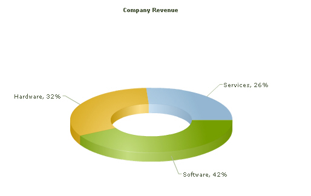

Functional Attributes Titles and Axis Names Chart Cosmetics Tool-tip Paddings and Margins <set> element Plot Cosmetics Pie / Doughnut Properties Smart Labels and Lines Number Formatting Font Properties
Functional Attributes Titles and Axis Names Chart Cosmetics Tool-tip Paddings and Margins <set> element Plot Cosmetics Pie / Doughnut Properties Smart Labels and Lines Number Formatting Font Properties| Quick Links (within this page) |
| Doughnut 3D chart looks as under: |
|  |
| Sample XML for Doughnut 3D chart: |
|
<chart caption='Company Revenue' showPercentageValues='1'> <set label='Services' value='26' /> <set label='Hardware' value='32' /> <set label='Software' value='42' /> </chart> |
|
|
| Chart Objects |
| Object Name | Description | Features Supported | Animation Parameters Supported |
| BACKGROUND | BACKGROUND refers to the entire background of the chart. |
|
|
| CAPTION | CAPTION refers to the heading of the chart. |
|
|
| DATALABELS | DATALABELS refer to the x-axis labels of the data. |
|
|
| DATAPLOT | DATAPLOT refers to the actual plot of the chart. For example, in Column 2D chart, columns are referred to as DATAPLOT. In Pie chart, it's the pies. In Bubble chart, it's the bubbles and so on. | ||
| SUBCAPTION | SUBCAPTION refers to the sub-heading of the chart. |
|
|
| TOOLTIP | TOOLTIP refers to the tool tip shown when mouse is hovered over the data plots. |
|
|
|
|
|||
| <chart> element Attributes |
| Functional Attributes |
| These attributes let you control a variety of functional elements on the chart. For example, you can opt to show/hide data labels, data values, y-axis values. You can also set chart limits and extended properties. |
|
|
| Attribute Name | Type | Range | Description |
| animation | Boolean | 0/1 | This attribute gives you the option to control animation in your charts. If you do not want to animate any part of the chart, set this as 0. |
| palette | Number | 1-5 | FusionCharts v3 introduces the concept of Color Palettes. Each chart has 5 pre-defined color palettes which you can choose from. Each palette renders the chart in a different color theme. Valid values are 1-5. |
| paletteColors | String | List of hex color codes separated by comma | While the palette attribute allows to select a palette theme that applies to chart background, canvas, font and tool-tips, it does not change the colors of data items (i.e., column, line, pie etc.). Using paletteColors attribute, you can specify your custom list of hex colors for the data items. The list of colors have to be separated by comma e.g., <chart paletteColors='FF0000,0372AB,FF5904...'>. The chart will cycle through the list of specified colors and then render the data plot accordingly. To use the same set of colors throughout all your charts in a web application, you can store the list of palette colors in your application globally and then provide the same in each chart XML. |
| showAboutMenuItem | Boolean | 0/1 | Setting this to 1 shows up a custom context menu in the chart, which can be customized to show your text and can be linked to your URL. For e.g., you can set the context menu of the chart to include "About your company name" and then link to your company home page. By default, the chart shows "About FusionCharts" when right clicked. |
| aboutMenuItemLabel | String | The menu item label for the custom context menu item. | |
| aboutMenuItemLink | String | URL | Link for the custom context menu item. You can specify the link in FusionCharts link format to be able to open the same in new window, pop-ups, frames or as JavaScript links. |
| showZeroPies | Boolean | 0/1 | Configuration whether to show pies with 0 values (and their values). Otherwise, they won't show up in the chart. |
| showPercentValues | Boolean | 0/1 | Whether to show percentage values in labels of the chart. |
| showPercentInToolTip | Boolean | 0/1 | Whether to show percentage values in tool tip. |
| showLabels | Boolean | 0/1 | Whether to show labels on the chart. |
| showValues | Boolean | 0/1 | Whether to show values on the chart. |
| labelSepChar | String | Character | The character to separate the data label and data values on the chart. |
| defaultAnimation | Boolean | 0/1 | By default, each chart animates some of its elements. If you wish to switch off the default animation patterns, you can set this attribute to 0. It can be particularly useful when you want to define your own animation patterns using STYLE feature. |
| clickURL | String | The entire chart can now act as a hotspot. Use this URL to define the hotspot link for the chart. The link can be specified in FusionCharts Link Format. | |
|
|
|||
| Chart Titles and Axis Names |
| Using these attributes, you can set the various headings and titles of chart like caption, sub-caption, x-axis and y-axis names etc. |
|
|
| Attribute Name | Type | Description |
| caption | String | Caption of the chart. |
| subCaption | String | Sub-caption of the chart. |
|
|
||
| Chart Cosmetics |
| The following attributes let you configure chart cosmetics like background color, background alpha, canvas color & alpha etc. |
|
|
| Attribute Name | Type | Range | Description |
| showBorder | Boolean | 0/1 | Whether to show a border around the chart or not. |
| borderColor | Color | Border color of the chart. | |
| borderThickness | Number | In Pixels | Border thickness of the chart. |
| borderAlpha | Number | 0-100 | Border alpha of the chart. |
| bgColor | Color | This attribute sets the background color for the chart. You can set any hex color code as the value of this attribute. To specify a gradient as background color, separate the hex color codes of each color in the gradient using comma. Example: FF5904,FFFFFF. Remember to remove # and any spaces in between. See the gradient specification page for more details. | |
| bgAlpha | Number | 0-100 | Sets the alpha (transparency) for the background. If you've opted for gradient background, you need to set a list of alpha(s) separated by comma. See the gradient specification page for more details. |
| bgRatio | Number | 0-100 | If you've opted for a gradient background, this attribute lets you set the ratio of each color constituent. See the gradient specification page for more details. |
| bgAngle | Number | 0-360 | Angle of the background color, in case of a gradient. See the gradient specification page for more details. |
| bgSWF | String | To place any Flash movie as background of the chart, enter the (path and) name of the background SWF. It should be in the same domain as the chart. | |
| bgSWFAlpha | Number | 0-100 | Helps you specify alpha for the loaded background SWF. |
| showVLineLabelBorder | Boolean | 0/1 | If you've opted to show a label for any of your vLines in the chart, you can collectively configure whether to show border for all such labels using this attribute. If you want to show label border for just a particular vLine, you can over-ride this value by specifying border configuration for that specific vLine. |
| logoURL | String | URL | You can load an external logo (JPEG/PNG/SWF) on the chart once it has rendered. This attribute lets you specify the URL of the same. Owing to Flash Player security settings, you can only specify logo that are on the sub-domain as the SWF file of the chart. |
| logoPosition | String | TL, TR, BL, BR, CC | Where to position the logo on the chart:
|
| logoAlpha | Number | 0-100 | Once the logo has loaded on the chart, you can configure its opacity using this atribute. |
| logoScale | Number | 0-300 | You can also change the scale of externally loaded logo at run-time by specifying a value for this parameter. |
| logoLink | String | URL | If you want to link the logo to an external URL, specify the link in this attribute. The link can be in FusionCharts link format, allowing you to link to new windows, pop-ups, frames etc. |
|
|
|||
| Data Plot Cosmetics |
|
These attributes let you configure how your plot (colums, lines, area, pie or any data that you're plotting) would appear on the chart. If the plots can show borders, you can control the border properties using the attributes listed below. Or, if they support gradient fills, you can again configure various properties of the gradient using these attributes. Various other controls over plot cosmetics can be attained using this set of attributes. |
|
|
| Attribute Name | Type | Range | Description |
| showPlotBorder | Boolean | 0/1 | Whether the column, area, pie etc. border would show up. |
| plotBorderColor | Color | Color for column, area, pie border | |
| plotBorderThickness | Number | 0-5 (Pixels) | Thickness for column, area, pie border |
| plotBorderAlpha | Number | 0-100 | Alpha for column, area, pie border |
| plotFillAlpha | Number | 0-100 | This attribute lets you set the fill alpha for plot. |
| use3DLighting | Boolean | 0/1 | Whether to use advanced gradients and shadow effects to create better looking 3D charts. |
|
|
|||
| Pie / Doughnut Properties |
| The following attributes let you control various functionalities of pie/doughnut chart. |
|
|
| Attribute Name | Type | Range | Description |
| slicingDistance | Number | In Pixels | If you've opted to slice a particular pie/doughnut slice, using this attribute you can control the distance between the slice and the center of chart. |
| pieRadius | Number | In Pixels | This attribute lets you explicitly set the outer radius of the chart. FusionCharts automatically calculates the best fit pie radius for the chart. This attribute is useful if you want to enforce one of your own values. |
| doughnutRadius | Number | In Pixels | This attribute lets you explicitly set the inner radius of the chart. FusionCharts automatically calculates the best fit radius for the chart. This attribute is useful if you want to enforce one of your own values. |
| startingAngle | Number | 0-360 | By default, the pie chart starts from angle 0 i.e., the first pie starts plotting from 0 angle. If you want to change the starting angle of the chart, use this attribute. |
| enableRotation | Boolean | 0/1 | The doughnut/pie charts have three modes: Slicing, Rotation and Link. If any links are defined, the chart works in Link mode. Otherwise, it starts in Slicing mode. If you need to enable rotation by default, set this attribute to 1. |
| pieInnerFaceAlpha | Number | 0-100 | Alpha of the pie inner face |
| pieOuterFaceAlpha | Number | 0-100 | Alpha of the pie outer face |
| pieYScale | Number | 30-80 | This attribute alters the y-perspective of the pie in percentage figures. 100 percent means the full pie face is visible and 0 percent means only the side face is visible. |
| pieSliceDepth | Number | In Pixels | This attribute controls the pie 3D Depth. |
|
|
|||
| Smart Lines & Labels |
|
Starting FusionCharts v3, the pie and doughnut charts can now have smart labels and lines. Smart labels/lines are data connector lines which connect the pie/doughnut slices to their respective labels without over-lapping even in cases where there are lots of labels located near each other. You can configure the smart labels/lines properties using the attributes below. |
|
|
| Attribute Name | Type | Range | Description |
| enableSmartLabels | Boolean | 0/1 | Whether to use smart labels or not. |
| skipOverlapLabels | Boolean | 0/1 | Whether to skip labels that are overlapping even when using smart labels. If not, they might overlap if there are too many labels. |
| isSmartLineSlanted | Boolean | 0/1 | The smart lines (smart label connector lines) can appear in two ways: Slanted or Straight. This attribute lets you choose between them. |
| smartLineColor | Color | Hex Code | Color of smart label connector lines. |
| smartLineThickness | Number | In Pixels | Thickness of smart label connector lines. |
| smartLineAlpha | Number | 0-100 | Alpha of smart label connector lines. |
| labelDistance | Number | In Pixels | This attribute helps you set the distance of the label/value text boxes from the pie/doughnut edge. |
| smartLabelClearance | Number | In Pixels | Clearance distance of a label (for sliced-in pies) from an adjacent sliced out pies. |
|
|
|||
| Number Formatting |
|
FusionCharts v3 offers you a lot of options to format your numbers on the chart. Using the attributes below, you can control a myriad of options like: |
|
|
| Attribute Name | Type | Range | Description |
| formatNumber | Boolean | 0/1 | This configuration determines whether the numbers displayed on the chart will be formatted using commas, e.g., 40,000 if formatNumber='1' and 40000 if formatNumber='0 ' |
| formatNumberScale | Boolean | 0/1 | Configuration whether to add K (thousands) and M (millions) to a number after truncating and rounding it - e.g., if formatNumberScale is set to 1, 1043 would become 1.04K (with decimals set to 2 places). Same with numbers in millions - a M will added at the end. For more details, please see Advanced Number Formatting section. |
| defaultNumberScale | String | The default unit of the numbers that you're providing to the chart. For more details, please see Advanced Number Formatting section. | |
| numberScaleUnit | String | Unit of each block of the scale. For more details, please see Advanced Number Formatting section. | |
| numberScaleValue | String | Range of the various blocks that constitute the scale. For more details, please see Advanced Number Formatting section. | |
| numberPrefix | String | Character | Using this attribute, you could add prefix to all the numbers visible on the graph. For example, to represent all dollars figure on the chart, you could specify this attribute to ' $' to show like $40000, $50000. For more details, please see Advanced Number Formatting section. |
| numberSuffix | String | Character | Using this attribute, you could add a suffix to all the numbers visible on the graph. For example, to represent all figure quantified as per annum on the chart, you could specify this attribute to ' /a' to show like 40000/a, 50000/a. For more details, please see Advanced Number Formatting section. |
| decimalSeparator | String | Character | This option helps you specify the character to be used as the decimal separator in a number. For more details, please see Advanced Number Formatting section. |
| thousandSeparator | String | Character | This option helps you specify the character to be used as the thousands separator in a number. For more details, please see Advanced Number Formatting section. |
| inDecimalSeparator | String | Character | In some countries, commas are used as decimal separators and dots as thousand separators. In XML, if you specify such values, it will give a error while converting to number. So, FusionCharts accepts the input decimal and thousand separator from user, so that it can covert it accordingly into the required format. This attribute lets you input the decimal separator. For more details, please see Advanced Number Formatting section. |
| inThousandSeparator | String | Character | In some countries, commas are used as decimal separators and dots as thousand separators. In XML, if you specify such values, it will give a error while converting to number. So, FusionCharts accepts the input decimal and thousand separator from user, so that it can covert it accordingly into the required format. This attribute lets you input the thousand separator. For more details, please see Advanced Number Formatting section. |
| decimals | Number | 0-10 | Number of decimal places to which all numbers on the chart would be rounded to. |
| forceDecimals | Boolean | 0-1 | Whether to add 0 padding at the end of decimal numbers. For example, if you set decimals as 2 and a number is 23.4. If forceDecimals is set to 1, FusionCharts will convert the number to 23.40 (note the extra 0 at the end) |
|
|
|||
| Font Properties |
|
Using the attributes below, you can define the generic font properties for all the text on the chart. These attributes allow you a high level control over font properties. If you intend to specify font properties for individual chart elements (like Caption, sub-caption etc.), you'll need to use the STYLES feature of FusionCharts v3. Using STYLES, you can also specify advanced font properties like Bold, Italics, HTML Mode etc. |
|
|
| Attribute Name | Type | Range | Description |
| baseFont | String | Font Name | This attribute lets you set the font face (family) of all the text (data labels, values etc.) on chart. If you specify outCnvBaseFont attribute also, then this attribute controls only the font face of text within the chart canvas bounds. |
| baseFontSize | Number | 0-72 | This attribute sets the base font size of the chart i.e., all the values and the names in the chart which lie on the canvas will be displayed using the font size provided here. |
| baseFontColor | Color | This attribute sets the base font color of the chart i.e., all the values and the names in the chart which lie on the canvas will be displayed using the font color provided here. | |
|
|
|||
| Tool-tip |
| These attributes let you control the tool tip. You can set the background color, border color, separator character and few other details. |
|
|
| Attribute Name | Type | Range | Description |
| showToolTip | Boolean | 0/1 | Whether to show tool tip on chart. |
| toolTipBgColor | Color | Background Color for tool tip. | |
| toolTipBorderColor | Color | Border Color for tool tip. | |
| toolTipSepChar | String | The character specified as the value of this attribute separates the name and value displayed in tool tip. | |
| showToolTipShadow | Boolean | 0/1 | Whether to show shadow for tool-tips on the chart. |
|
|
|||
| Chart Padding & Margins |
|
The following attributes help you control chart margins and paddings. FusionCharts v3 allows you manually customize the padding of various elements on the chart to allow advanced manipulation and control over chart visualization. Padding in FusionCharts is always defined in pixels, unless the attribute itself suggests some other scale (like plotSpacePercent). You can also define the chart margins. Chart Margins refer to the empty space left on the top, bottom, left and right of the chart. That means, FusionCharts wouldn't plot anything in that space. It's not necessary for you to specify any padding/margin values. FusionCharts automatically assumes the best values for the same, if you do not specify the same. |
|
|
| Attribute Name | Type | Range | Description |
| captionPadding | Number | In Pixels | This attribute lets you control the space (in pixels) between the sub-caption and top of the chart canvas. If the sub-caption is not defined, it controls the space between caption and top of chart canvas. If neither caption, nor sub-caption is defined, this padding does not come into play. |
| chartLeftMargin | Number | In Pixels | Amount of empty space that you want to put on the left side of your chart. Nothing is rendered in this space. |
| chartRightMargin | Number | In Pixels | Amount of empty space that you want to put on the right side of your chart. Nothing is rendered in this space. |
| chartTopMargin | Number | In Pixels | Amount of empty space that you want to put on the top of your chart. Nothing is rendered in this space. |
| chartBottomMargin | Number | In Pixels | Amount of empty space that you want to put on the bottom of your chart. Nothing is rendered in this space. |
|
|
|||
| <set> element |
|
Each <set> element (child of <chart> or <dataset> element) represents a set of data which is to be plotted on the graph and determines a set of data which would appear on the chart. For a single series chart, a typical <set> element would look like: <set label='January' value='17400' /> For a multi-series chart, it could look like: <dataset seriesName='2006'> <set value='35445' /> <set value='35675' /> .... and so on .... </dataset> In multi-series/combination charts, you should again note that the number of <category> elements should be equal to the number of data points in each data sets, i.e., if you mention twelve categories (twelve months), the data for both years (2005 & 2006) should also contain twelve <set> elements (twelve rows of data). |
|
|
| Attribute Name | Type | Range | Description |
| borderColor | Color | Hex Code | If you want to set border color of individual pie/doughnut data items, you can specify using this attribute. |
| isSliced | Boolean | 0/1 | This attribute determines whether the pie appears as a part of the total chart or is sliced out as an individual item. |
| label | String | This attribute determines the label for the data item. The label appears on the x-axis of chart. | |
| value | Number | Numerical value for the data item. This value would be plotted on the chart. | |
| displayValue | String | If instead of the numerical value of this data, you wish to display a custom string value, you can specify the same here. Examples are annotation for a data item etc. | |
| color | Color | Hex Code | If you want to define your own colors for the data items on chart, use this attribute to specify color for the data item. This attribute accepts hex color codes without #. |
| link | String | You can define links for individual data items. That enables the end user to click on data items (columns, lines, bars etc.) and drill down to other pages. To define the link for data items, use the link attribute. You can define links that open in same window, new window, pop-up window or frames. Please see "Advanced Charting > Drill Down Charts" for more information. Also, you'll need to URL Encode all the special characters (like ? and &) present in the link. | |
| toolText | String | By default, FusionCharts shows the data item name and value as tool tip text for that data item. But, if you want to display more information for the data item as tool tip, you can use this attribute to specify the same. | |
|
|
|||